🎍本篇文章主要对 DETR 的相关类容进行简单的介绍，内容涉及DETR、Deformable DETR、DAB-DETR、DN-DETR 和 DINO 等 Transformer 在目标检测领域应用的算法。
DETR
Framework
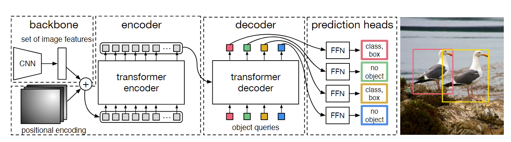
DETR 算是 Transformer 在视觉领域应用的第一篇文章，至少是我读过的第一篇，即 End-to-End Object Detection with Transformers。可以看出 image 通过 CNN 或者 Transformer 作为 backbone 进行提取 feature，然后经过 Transformer 进行进一步的特征提取，最后送入检测头预测。
Transformer
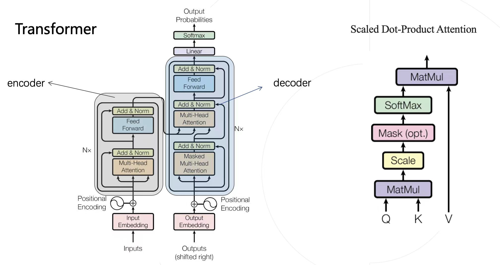
显然在 DETR 中最重要的就是 Transformer 了。其是由多个 encoder 和多个 decoder 组成。decoder 的第二个多头注意力 (Multi-Head Attention MHA) 将 encoder 的输出作为两个输入。实际上 MAH 中主要由点积放缩注意力算子组成，大概可以看到其由 Query、Key 和 Value 三者作为输入，进行一系列矩阵操作得到结果。
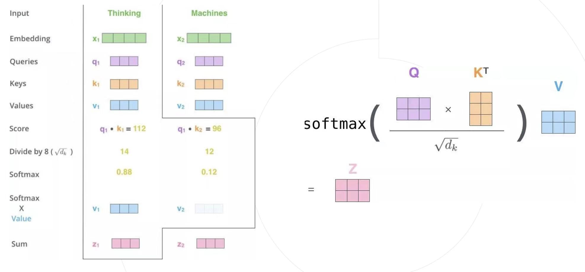
通过上图可以简单对点积缩放注意力算子进行介绍。每一个 Embedding 可以生成对应的 Q、K、V ，然后每一个 Embedding 的 Q 都会跟 n 个 K （包括自己的）进行向量内积计算，从而得到 n 个 值，再通过 softmax 得到 n 个权重，最后和 n 个 V 相乘得到了最后的结果。这个过程可以通过右边矩阵相乘实现，里面涉及两个矩阵乘法 Q x K，其结果和 V 进行矩阵相乘。而对于 encoder 而言，Embedding 的个数是和 image 的尺寸成正比，那么其矩阵相乘的计算复杂度就和 image 的尺寸就成平方关系了。
Deformable-DETR
Motion
Deformable DETR 这篇文章是商汤发表的文章。在这篇文章里面，认为 DETR 收敛慢的原因在于训练初期由于初始化的因素，模型对特征图的关注是非常均衡的，但是我们训练的目的是为了突出一个位置进行特别的关注，因此要想达到这种效果，原 DETR 需要经过较长时间的收敛。受到可变形卷积的启发，于是想到能不能做可变形注意力机制来进行加快收敛。
Framework
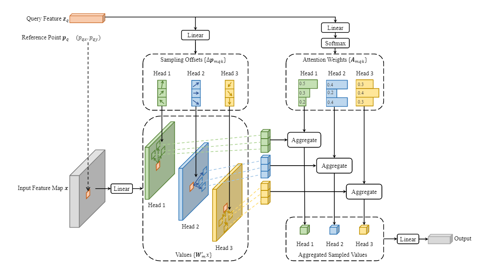
从上图我们可以看出，对于特征图的每一个位置会生成参考点(reference point)，并且通过 Query 来生成相应的 sampling offsets，图中的是每一个点会生成三个 offsets 代表由三个偏移点来生成这个点的特征值，而这三个偏移点的权重也是由 Query 生成的 (Attention Weights)。从这里看到其中没有涉及矩阵乘法，因此和 image 的尺寸是成线性关系的。
Focus
deformable attention
最核心的地方应该在于如何进行可变形注意力的计算了，可见下面两行代码：
sampling_offsets = self.sampling_offsets(query).view(N, Len_q, self.n_heads, self.n_levels, self.n_points, 2) attention_weights = self.attention_weights(query).view(N, Len_q, self.n_heads, self.n_levels * self.n_points)这里的 self.n_points 一般为 4，Len_q 为 query embedding 的个数，在 encoder 里面则为 Hi Wi，decoder 中则为需要预测 boxes 的个数。这里对每一个位置生成了 4 个采样点的偏移和4 个采样点的权重，这个偏移加上*基础点的位置得到最后采样点的坐标（这里是不是很像 anchor + offsets 的感觉），得到坐标之后就可以用双线插值法得到这些点的 Value，乘上
attention_weights就能得到最终的输出了。这里是其 pytorch 的实现 cuda 实现也基本一致two-stage & iterative bounding box refinement
这里讲的是从 encoder 里面出来后的输出的使用，和如何不断在 decoder 中迭代每一个 decoder layer 的输出。
首先前者会通过 encoder 得到每个位置的偏移预测和分数，通过分数选出 topk 的 proposal，这里我们有他们的偏移和 anchor 的位置，肯定也能得到其最终坐标，这个坐标就是进行 decoder 中起始的 anchor 坐标。通过对得到的坐标进行维度的转换得到进入 decoder 的query 和位置编码。源码位置在这里。
后者 boxes 的迭代可以理解为每个 decoder layer 层对 boxes 进行 refine 送入下一层中作为起始的 anchor 坐标。这里是不是很像 Cascade RCNN 的思路
最终效果也是非常明显，将 Epoch 从 500 降低至了 50！
DAB-DETR
从这篇文章开始，都是粤港澳大湾区数字经济研究院的工作了，接下来的三篇文章基本都是基于 Deformable DETR 之上进行做的，基本是针对 DETR 收敛速度的研究。因此只介绍基于 Deformable DETR 之上的版本。
Motion
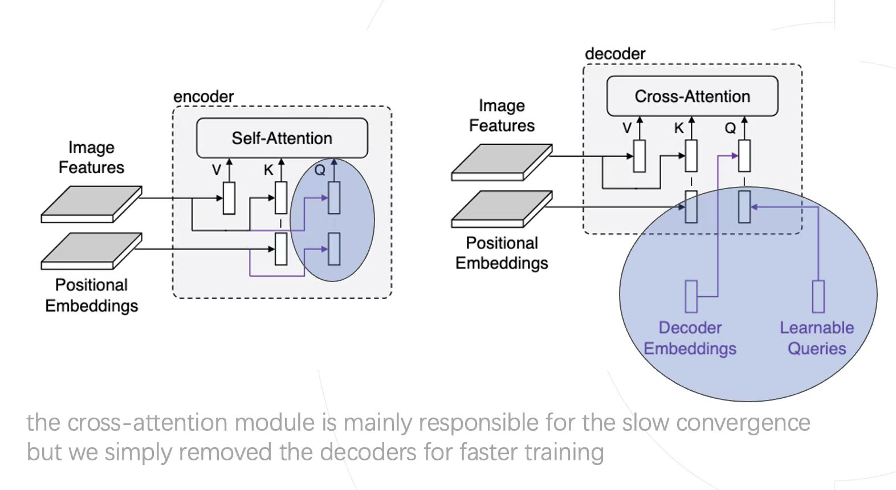
文章通过前人的经验得出，导致 DETR 训练速度慢的原因很大可能是因为 decoder 中 cross attention 这个模块，由上面的对比可以看出其与 self attention 的区别主要就在于 query 的不同。文章猜想两个原因：query 比较难学和 query 的位置编码方式不对。
Framework
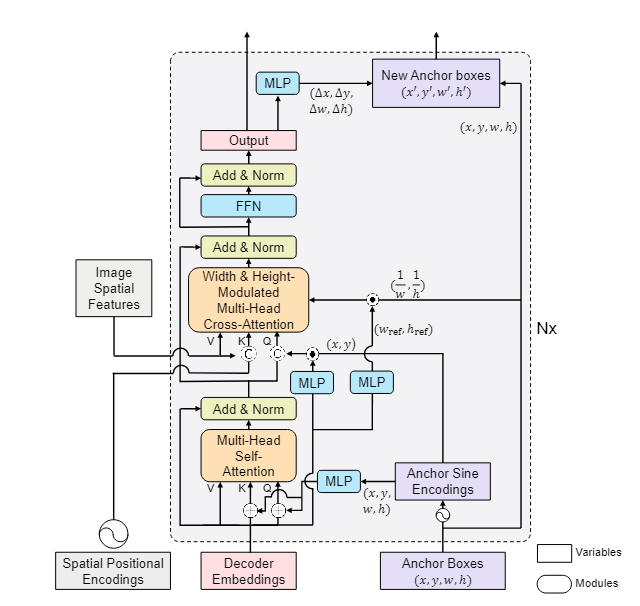
文章分别进行了实验：1、使用训练好的 query 来进行实验，发现并没有加快收敛；2、对 decoder 的位置编码改为正弦位置编码，并让 query 中的一个 embedding 关注一个位置发现收敛变快。最终得到上述的网络框架，通过编码的 anchor 会和 query、key 结合，当然这种情况仅限与 DETR 的改动，在 Deformable DETR 里面仅仅对位置编码进行重新调整了一下，源码在这里。
Focus
这篇文章里面还有一些其他改进，但是经过我的实验发现可能只是对这个模型有效，所以就没介绍。我觉得其最重要的是，它告诉了我们 decoder 里面的 query 到底在学什么？它就是位置的先验，最后出来的也是有多少 embedding 就有多少的框。这是文章最重要的意义，也指引后面的工作可以朝着这个方向去努力。
DN-DETR
Motion
DN-DETR 从另外一个方面来探索 DETR 收敛慢的原因，那就是匈牙利算法匹配的不稳定性。比如经常出现这个 anchor 在上一次的匹配中是匹配给 GT1 的，但是这一次就匹配给 GT2 了，这使得 anchor 老是换来换去学习，从而致使收敛慢。那么这个问题是由什么引起的呢？
经过前面几篇论文的探索，我们可以把类 DETR 的学习氛围两阶段：good anchor 和 relative offsets 的学习，前者是在 encoder 中学习，后者的微调是在 decoder 中的。然而good anchor 容易办到，offsets 的学习却难。因此，文章认为导致匹配不稳定的因素主要是这个。offsets 的学习质量可以用 L1 loss 很好的量化，文中也涉及了一些指标来量化是否稳定。从实验上看，确实 L1 更稳定时，匹配也稳定，这两者是相辅相成的。
Framework
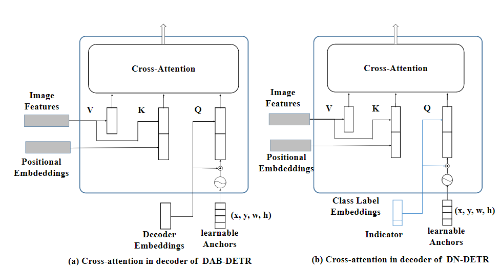
其实可以看到，与 DAB-DETR 相比，最大的差别仍然在 decoder 处，主要是 query 的输入。DN-DETR 认为我们可以把对 offsets 的学习，看作一种对噪声学习的过程，因此，可以直接在 GT 周围生成一些 noised boxes，这些 boxes 是 GT 进行稍微移动得到的。然后将得到的 noised boxes 转化为高维的 embedding 与原本的 query 进行 cat，同时这些 noised boxes 的类别本应该是 GT 的类别，但是为了学习类别的噪声，因此将其任意翻转到其他类别再进行 embed。最后希望通过模型的学习，将 offsets 学好，同时把类别整对。这里可以看作增加了很多 good anchor 供模型学习，而且这些 boxes 最后不用参加匈牙利匹配，因为它们是由某个 GT 演化而来，从出生开始就已经形成了天然的匹配。
Focus
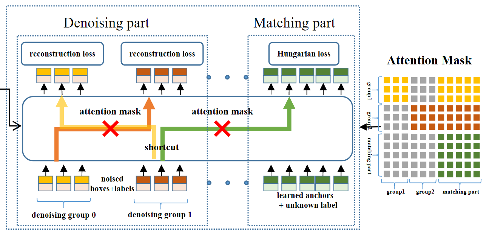
那么还有另外一个问题没有解决，就是生成的 noised boxes 是带有 GT 信息的，不能被由正常 query 预测的 boxes 在进行注意力计算的时候学到。因为真正到推理的时候，就没有人给你提供 GT 的信息了。文章通过上图中右边的 attention mask 来对其进行了屏蔽。灰色的是信息不相通的，对于生成的部分 (denoising part) 互相看不见，自己只能跟自己玩，生成的部分可以看见正常预测的部分 (matching part)，但是正常预测的看不见生成的部分。这里很合理，因为正常预测的部分不含有 GT 信息，被不被看到无所谓。（这个 mask 的看法为：group1 横着对出去灰色的是看不见的，彩色的看得见，其余皆是如此。
最后收敛效果也很显著，只需要 12 epoch 就能达到 44.1 AP
DINO
DINO 则是这个系列的集大成者，代码的话建议看这个，原 repo 感觉有点乱。DINO 整体的 pipline 没有太大变化，主要基于 DN-DETR 在三个方面上进行了改进。
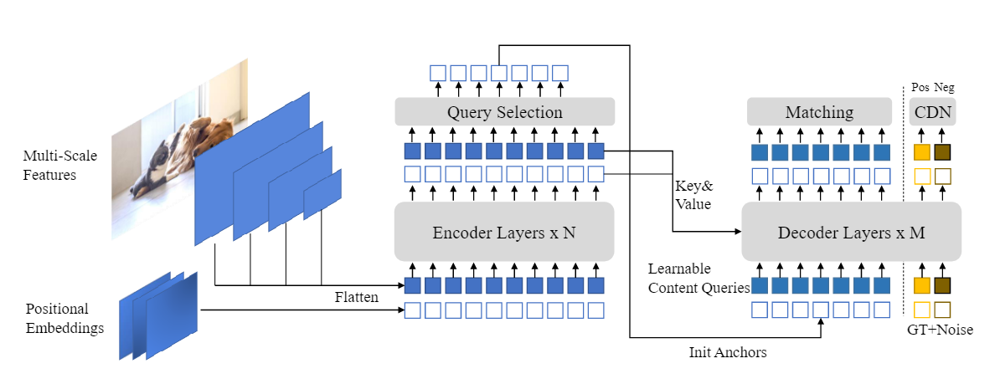
Contrastive DeNoising Training
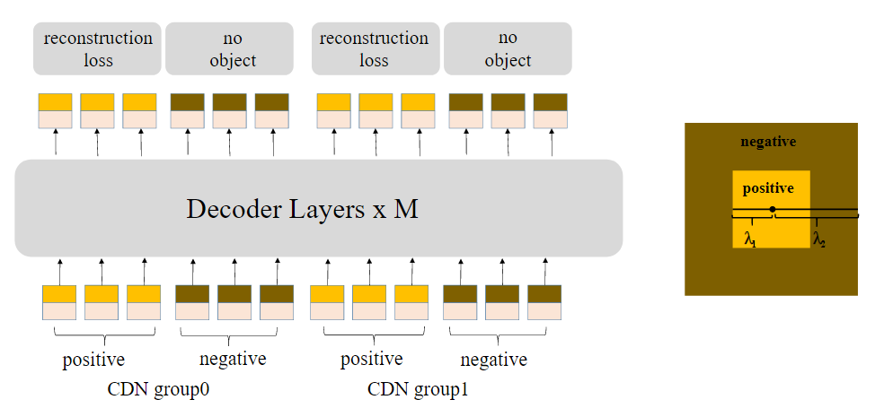
首先动刀的地方在加噪声这个环境，之前 DN-DETR 的噪声实际上只有正样本的噪声没有负样本的，因此 DINO 在生成正样本的同时也生成了高质量的负样本噪声，简单来说就是负样本噪声离 GT 比正样本噪声更远，宽高形变更严重。这样做主要使得小目标检测的效果变化好了，不过论文好像没有研究这个的原因。
It can inhibit confusion and select high-quality anchors (queries) for predicting bounding boxes
Mixed Query Selection
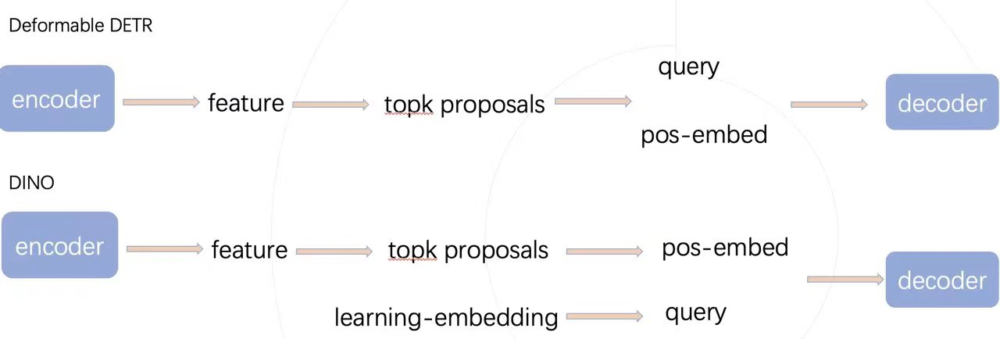
这里对比了一下 Deformable DETR 和 DINO 进入 decoder 前 query 和 position-embedding 的生成。可以发现 DINO 的 query 并没有由 proposal 来生成，文章是这样说的：
As the selected features are preliminary content features without further refinement, they could be ambiguous and misleading to the decoder
Look Forward Twice
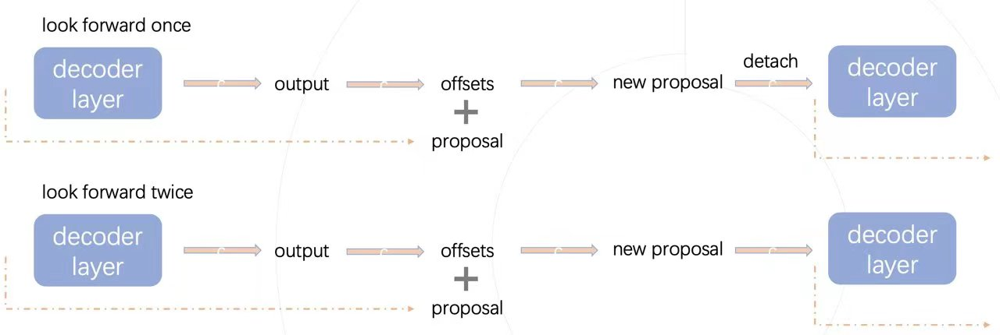
其实差别就在于，上一层的 points 需不需要 detach 后再送入下一层进行 refine，文章是这样说的：
However, we conjecture that the improved box information from a later layer could be more helpful to correct the box prediction in its adjacent early layer
虽然论文讲了挺多，后面两个改动，在代码中的表现就一行。文章的消融实验其实没有太大对比性，因为文章中消融实验的 AP 为 47.9 是 DINO-scale 的精度，但是 repo 的精度已经到了 49.0 了。不过有一说一这确实厉害，12 epoch 能跑出这个成绩！
至此从 DETR 到 DINO 的就讲完啦🍇🍇🍇